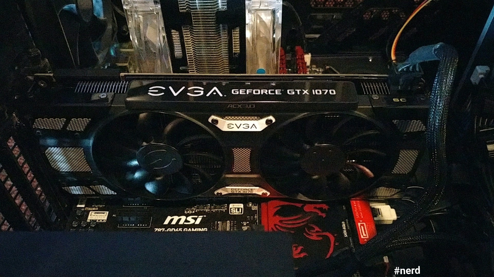

Computers
I've spent my entire life dealing with computers, from hardware to software. I have a large interest in building hardware and have put together about 7 desktop computers now, including my own.
I've grown up playing video games and they're a big hobby of mine. I have over 200 games in my Steam library and my favorite games are probably Heavy Rain and Life is Strange. The game you're most likely to see me playing right now is Blizzard's Overwatch.

My graphics card installed in my desktop
Aside from just playing video games I also love programming and have written some games/programs with friends and peers. The two publicly available programs I'm most proud of are Zombiegame and Boggle.
Programming is not just a career or work for me, but also a hobby. I've written countless amounts of code just for personal use or even for fun. You can find my personal github here.
I'm proficient in a few coding languages, listed below.
- Java
- C
- Python
- HTML
- CSS
- Javascript
Music
Music really envelops my life. I've been a pianist since I was in the 2nd grade and often play as a good way to relax. No matter what I'm doing, you can usually find me with something playing in the background.
My headphones of choice, the AKG K7XXs
Piano
My favorite song to play is Spectrum (ft. Matthew Koma) (Piano Version) by Zedd.
Skateboarding
Skateboarding wasn't really a part of my life until 2016 when I got my first skateboard from my uncle. Although I'm not that good at tricks, I really enjoy riding around both alone and with friends.
Photography
Photography is just a small hobby of mine that I've only recently begun to actively pursue. I plan to get a nice DSLR camera sometime in the next year and potentially even make some money taking pictures for people.

A picture of the Genome Sciences building at UNC Chapel Hill

My aunt's cat sitting under their Christmas tree
Motivation and Personal Drive
When given a job, I feel that it is my responsibility to ensure not only that the task is completed by the end date, but also that it is completed well. I believe that if you are not able to submit quality work that you do not deserve to be assigned important tasks. Therefore, I try to make sure that I am always creating quality content that pleases other people. When that comes to programming, I try to create the best code that I can so that it is pleasing not only to the consumer but also fellow developers I may be working with or that may be working with my code. In the past, these qualities have allowed me to effectively lead teams. When writing Zombiegame, I worked with two other developers to create the game, using my skills in conflict resolution and management to ensure that everyone was happy with their role in the project.
Strengths
At work I'm a hardworking individual who really enjoys communicating with others. I'm usually not too hard to get along with and I'm always trying to make sure everyone is staying focused enough to get their work done in an appropriate amount of time. I'm a very accepting person when it comes to peoples' beliefs and interests, so in a work environment that would never be an issue as long as everyone respects each other enough to not get into constant arguments.
I believe a good leader is one who is simply a positive addition to the group and does not seem to stand above or higher than anyone else. A good leader works with everyone to make sure that people get along and are contributing well. This is why, when I lead a group, I don't like to be a leader that thinks they're better than anyone else and just tells everyone what to do. I make sure to touch in with each person and establish that they are satisfied with the group.
When it comes to something such as helping people solve computer problems, I become very involved in making sure I don't leave without fixing the issue. It becomes a personal challenge that I feel greatly accomplished upon completing. Because many of my friends and family know of my knowledge and experience in the technology field, I've been tasked as tech support a lot in my life. Helping people of all ages (from younger than me to the elderly) overcome the hill that is the ever-growing, ever-advancing field of technology has been a part of my life for the great majority of it. I've always gotten positive feedback and take it to heart every time. I like making people happy, and solving their problems is a good way to accomplish that.
If I'm not doing one of the hobbies listed above, I'm probably just hanging out with my friends and having a good time.